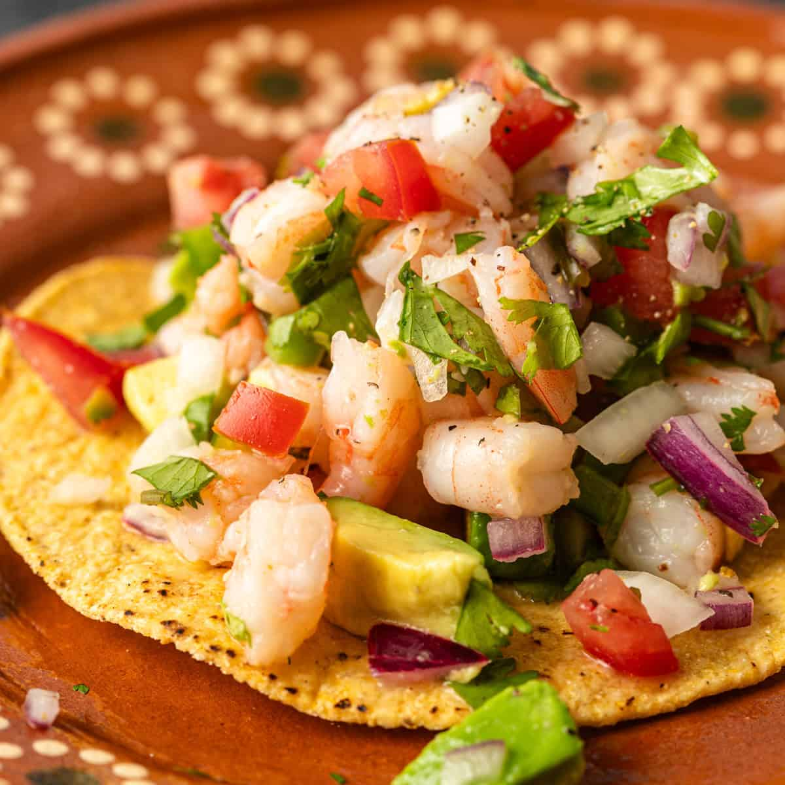

Ceviche

Description
Best served from Mexico, ceviche is a delicious and refreshing mix of shrimp cooked in lime juice
with onions, cilantro, and tomatoes. Served on top of a tostada, it sure puts Peruvians to shame.
Ingredients
- Shrimp
- Lime
- Red Onions
- Cilantro
- Cucumbers
Steps
- Peel and cut shrimp
- Put shrimp in a mixing bowl, then squeeze lime juice until shrimp is fully submerged
- Put mixing bowl in fridge to start cooking
- Dice onions, cucumbers, and cilantro. Store aside for now
- After shrimp is pink/orange color, it is ready. Add the vegetables
- Add a bit of salt (to your liking). Stir well.
- Enjoy.
Home